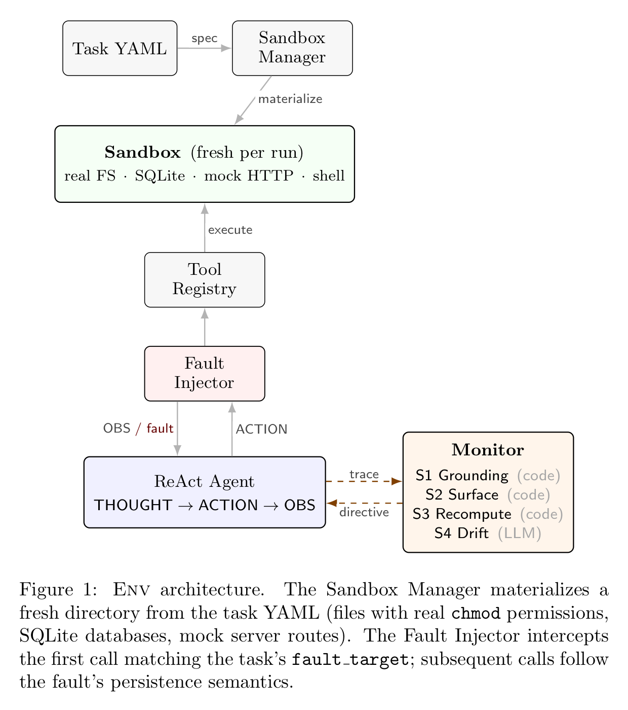

Gün Kaynar, B Yan, C Kingsford
NeurIPS 2026 Workshop Who Verifies the Agents? Toward Reliable Agent Development, 2026
Tool-using LLM agents must recover when a tool call fails, by retrying, switching tools, or revising their plan. We study how agents fail when tools fail, using RetryRealistic, a sandboxed yet realistic testbed for controlled fault injection in which agents operate on a real OS filesystem with genuine permission enforcement, SQLite databases, a deterministic local HTTP server, and a constrained shell, across 8 tools, 9 fault types with controlled persistence, and 30 multi-step tasks. Evaluating four agents over 2,100 faulted runs against ground truth, we find that recovery is unreliable (19–68% correct) and frequently silent: 6–26% of runs end in a confident fabrication, a wrong answer asserted as fact. The failure mode is governed more by the fault type than by the model: faults that return partial data drive fabrication (up to 38%), while hard denials drive honest failure. The mechanism is what we call silent ingestion: the agent accepts faulted data as valid on first contact without retrying or flagging the problem, then builds a fabricated answer on top of it. We show that fabrication is reducible: a verification-first Monitor, grounding checks in structured tool outputs and issuing corrective directives rather than hard blocks, raises correct recovery from 45.6% to 56.3% and cuts fabrication from 17.3% to 10.8%. Removing chain-of-thought increases fabrication (+8.3 pp), so deliberation guards against silent ingestion. We release RetryRealistic, the fault-injection toolkit, and all annotated traces at https://github.com/Kingsford-Group/RetryRealistic.
